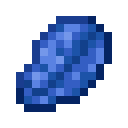
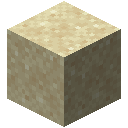

入门
第一个模型只需几个方块：一个模型核心、一个嵌入表和一些信号线缆。它学的是你周围的方块接下来会怎样。预报机把这派上用场：一旦它的预报站得住，你的熔炉就能快四倍。
材料
张量机壳是每台机器的外壳；权重晶体存放学到的数值，带权重的机器都要用到它。
 合成
合成


 合成
合成


再合成模型核心、一组线缆和一个预报数据集：取之不尽的作物生长和机器工作的记录行，供它学习。


机器在制造机里制造。不放光掩模时，它用一个机壳、一块晶圆和一颗权重晶体造出嵌入表。
合成


 无序合成
无序合成


搭建
放下模型核心。它的正面朝向你：词元从这里出来。

从核心正面铺一条线缆，通到几格外的一处空地。

把嵌入表贴着这条线缆的末端放下。它会自动接入：背面读取线缆，正面朝外。

再从嵌入表正面铺一条线缆，回到核心的任意另一面：侧面、顶面或背面。模型的分数从这里输入。

打开嵌入表，把宽度设为 V（词表）。

两条线缆互不接触，所以组成两个独立的网络：一个把词元送到嵌入表，另一个把嵌入表的分数送回来。
训练
打开核心，把预报数据集放进一个数据槽。切到「训练」页，按下「训练」。两条曲线会下降：练习上的损失，以及测试上的损失；测试只用模型从未练过的记录行。
数据集里每一行都是一个方块，一次又一次地查看。熔炉的一行记的是它正在做的这件东西做到了哪儿，从刚开始的 a 到快完成的 h，然后再来一轮：abcdefghabcdefgh。作物的一行是它每次查看时的生长阶段，从 0 到 7。宽度为 V 的嵌入表根据前一次查看给下一次查看打分，而对机器来说，前一次查看几乎就定下了下一次。当「测试」页上的预报低于 0.21，模型就准备好了。
保存
合成一个检查点，放进核心的检查点槽，按下「存入检查点」。核心会用每一项基准测试这个模型，并把它连同分数一起存进晶体。机器可以继续训练；检查点留住的是这一刻。
合成

让熔炉超前运行
合成一台预报机，放在你的熔炉、烟熏炉或高炉中间：四格之内，同一层或上下各一层。把检查点放进它的模型槽，并让熔炉有料可烧、有燃料可用。
合成


预报机每做一件东西就查看每台机器八次，记下它做到了哪儿。等机器按自己的节奏做完十来件，它就拿模型对照它们的实际。若模型预期的进度与实际相差不超过 11%，机器每过一次查看，它就推进四次：模型画出每台机器接下来的几次查看，机器就照着做完。不超过 25%，推进两次。其余的，包括作物，见预报机。
更进一步
- 更好的模型需要按设计造出的机器：在试验台上亲手接线，或者去遗迹里寻找旧世界的设计。
- 存储收好熔炉做出的东西：每台熔炉下面放一个端口，把产物搬上驱动器，存储终端再把它找出来。
- 智能体运行你拼出来的程序：挖矿、搬运、建造、分类，模型只在学习胜过规则的地方补位。
- 看向任意机器，就能看到它的名称、输出形状（或它出了什么问题），以及你所看的那一面的作用。
- 潜行时对机器的某一面使用，可让它的输出朝向那一面。
- 训练在独立的线程上运行。把训练加速器贴着核心放置能给它更多线程，并注意让它们保持凉爽。


 铁锭铜锭红石粉张量机壳青金石玻璃权重晶体
铁锭铜锭红石粉张量机壳青金石玻璃权重晶体 金锭红石块模型核心信号线缆白色信号线缆橙色信号线缆品红色信号线缆淡蓝色信号线缆黄色信号线缆黄绿色信号线缆粉红色信号线缆灰色信号线缆淡灰色信号线缆青色信号线缆紫色信号线缆蓝色信号线缆棕色信号线缆绿色信号线缆红色信号线缆黑色信号线缆水桶纸时钟预报数据集灯笼活塞熔炉制造机沙子玻璃板晶圆
金锭红石块模型核心信号线缆白色信号线缆橙色信号线缆品红色信号线缆淡蓝色信号线缆黄色信号线缆黄绿色信号线缆粉红色信号线缆灰色信号线缆淡灰色信号线缆青色信号线缆紫色信号线缆蓝色信号线缆棕色信号线缆绿色信号线缆红色信号线缆黑色信号线缆水桶纸时钟预报数据集灯笼活塞熔炉制造机沙子玻璃板晶圆正面：词元从这里离开。
这条线缆把词元送到嵌入表。
嵌入表，背面贴着线缆。
回来的路：分数从核心的顶面进入。
模型核心。词元从正面离开，分数从顶面回来。
嵌入表，宽度设为 V。
紫水晶碎片检查点堆肥桶预报机预报机，装着一个通过预报的模型。